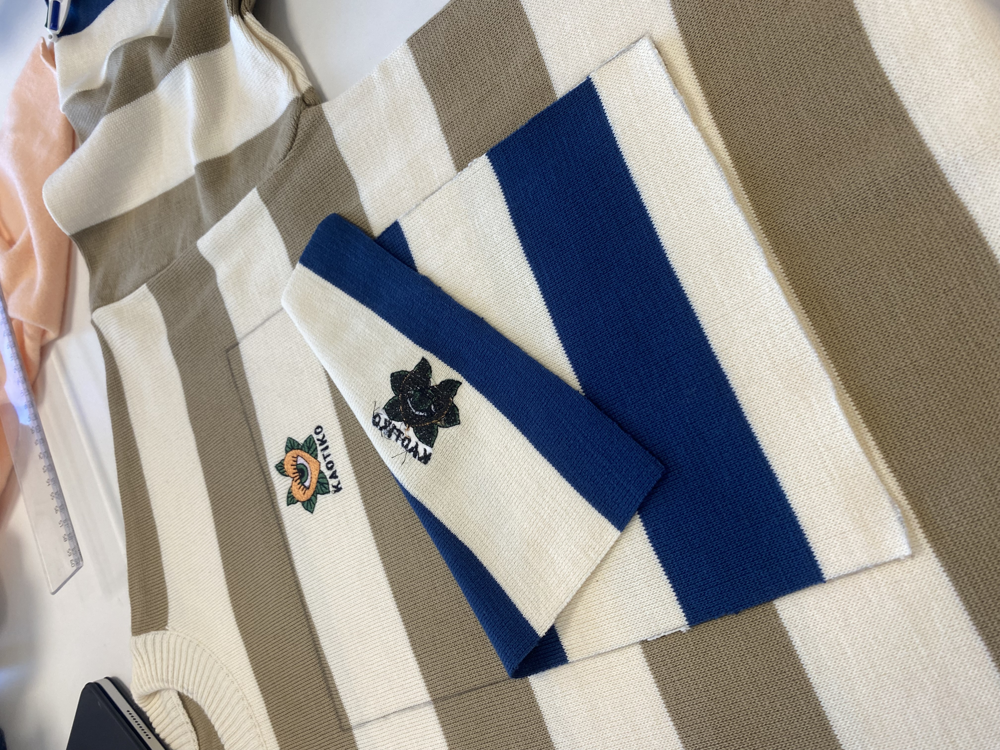

Este proyecto surge en el contexto de un taller de moda en UDIT, donde trabajamos de forma experimental y creativa con prendas reales de la marca Kaotiko. La propuesta consistía en intervenir dos jerséis originales de la firma —idénticos en diseño pero diferentes en color— para crear nuevas piezas únicas, más personales y disruptivas.
El proceso comenzó con la elección de los dos jerséis: uno en tonos beige y otro en azul marino, ambos con el icónico bordado de Kaotiko en el pecho. A partir de ahí, planteamos un rediseño basado en el intercambio de elementos entre ambas prendas. Decidimos intercambiar las mangas y añadir un parche frontal contrastado, jugando con la geometría de las franjas y generando una composición visualmente llamativa, pero equilibrada. La intervención no fue solo estética, sino también técnica. Utilizamos máquinas industriales para desmontar, coser y reconstruir las piezas con precisión, respetando la estructura original de las prendas pero dándoles un nuevo carácter. Este ejercicio nos permitió trabajar con conceptos de upcycling, personalización y edición limitada, muy presentes hoy en el mundo de la moda contemporánea. El resultado son dos jerséis híbridos que mantienen la esencia de Kaotiko pero con una nueva identidad: más atrevida, más visual y más personal. El uso del bordado original como elemento unificador refuerza la autenticidad de las piezas, mientras que los contrastes de color y forma las convierten en productos únicos. Este proyecto ha sido una oportunidad para explorar el diseño de moda desde una perspectiva práctica, poniendo en valor la reutilización creativa y el diseño colaborativo como herramientas para generar prendas más significativas y sostenibles.